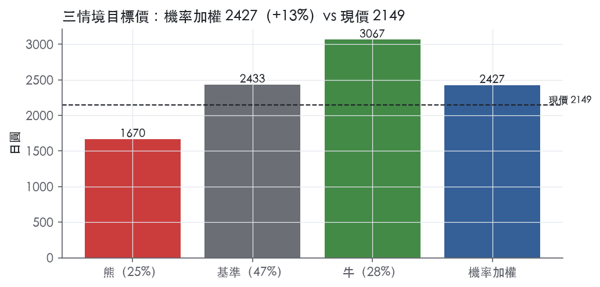
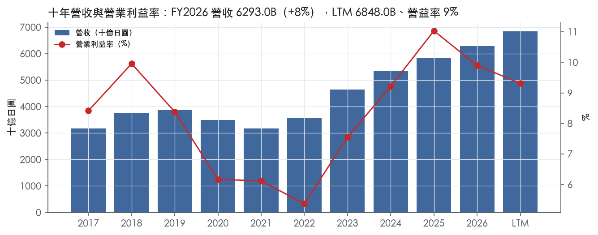
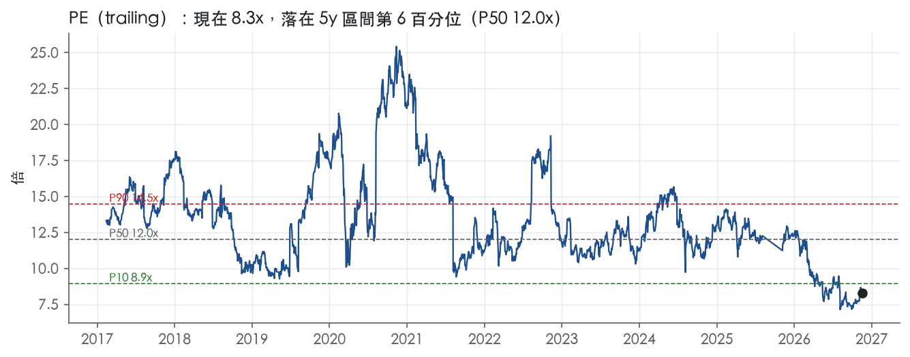
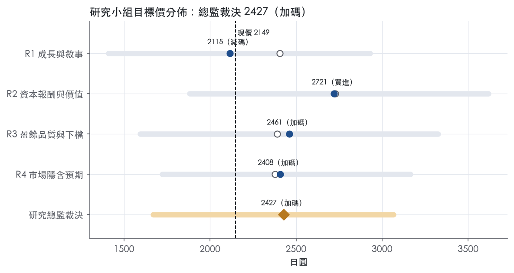
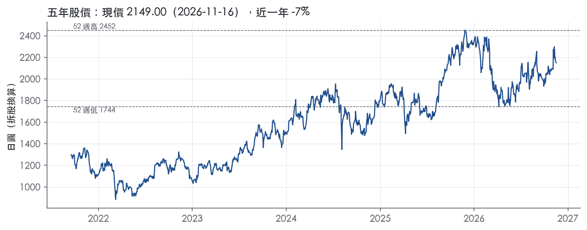

評等總表 › 未分類 › 7269.T
谷底倍數對谷底利潤率，看多｜評等 加碼｜目標價 2427
| 報告日 | 評等 | 目標價 | 當時股價 | 超額報酬 |
|---|---|---|---|---|
| 2026-11-16 | 加碼 | 2,427 | 2,149 | +7.4% |
| 評等 | 加碼（邊界，鄰近中立） |
| 12 個月目標價 | 2427 日圓 |
| 現價 | 2149.00 日圓（2026-11-16） |
| 預期報酬 | 股價 +12.9%＋股息 2.3%＝總報酬 +15.2%；日股門檻 7.8%，超額 +7.4% |
| 估值方法 | P/E 9.0x，套在第 5–8 季的EPS（也就是一年後的未來四季） |
| 三情境 | 熊 1670／基準 2433／牛 3067 |
| 研究流程 | 四位研究員兩輪辯論＋研究總監裁決 |
| 資料來源 | EDINET、TDnet、J-Quants、Yahoo、FRED（全免費） |
谷底倍數對谷底利潤率，看多（研究總監裁決，四位研究員兩輪辯論後）
評等 加碼（邊界，鄰近中立）｜12 個月目標價 2427 日圓（總監三情境機率加權 2420 與研究員中位數 2434 各半）｜現價 2149.00（2026-11-16）
預期報酬：股價 +12.9%＋股息 2.3%＝總報酬 +15.2%。日股門檻 7.8%，超額 +7.4%，離中立的分界不到三個百分點，屬邊界評等（落在其他級距的機率約三成）。
估值方法：P/E 9.0x，套在第 5–8 季的EPS（也就是一年後的未來四季）。三情境：熊 1670（25%）／基準 2433（47%）／牛 3067（28%）。
什麼會讓研究總監改變看法：FY2027Q3 單季營益率低於 7.5% 或公司下修全年營業利益計畫，我回中性；FY2027 歸屬母公司淨利對稅前利益保留比例低於 58%，我上調稅率代理並把倍數退到 P25。
| 過去四季（實際，FY2027Q2） | 未來四季 | 第 5–8 季 | 第 9–12 季 | |
|---|---|---|---|---|
| 營收（B） | 6,848.0B | 7,395.8B | 7,839.6B | 8,231.6B |
| 營收成長 | 17.4% | 8.0% | 6.0% | 5.0% |
| 營業利益率 | 9.3% | 8.3% | 8.5% | 8.7% |
| EPS（日圓） | 259.22 | 253.27 | 270.38 | 286.61 |
| EPS 成長 | 36.8% | -2.3% | 6.8% | 6.0% |
| 每股股息（日圓） | — | 0.00 | 0.00 | 0.00 |
| P/E（現價） | 8.3x | 8.5x | 7.9x | 7.5x |
| 股息殖利率（現價） | 2.3% | — | — | — |
過去四季為申報數字；預測為研究總監的假設、程式計算。倍數與殖利率都用現價計算，用來看現價對應各期獲利的高低。
| 情境 | 機率（歷史） | 故事 | 未來四季營收成長 | 第 5–8 季營益率 | 倍數 | 目標價 | 股價漲跌 |
|---|---|---|---|---|---|---|---|
| 熊 | 25%（24%） | 風險表第 2 條印度需求與競爭、第 1 條日圓走本行上行情境 145、第 3 條原材料轉嫁不完全；營益率跌至 7%、倍數落前瞻帶 P10 | 1.0% | 7.0% | 7.8x | 1670 | -22.3% |
| 基準 | 47%（47%） | 計畫被超越、營益率 8% 中段打底、校正口徑後 EPS 略高於 LTM，倍數由 P25 附近小幅回到 9.0x | 8.0% | 8.5% | 9.0x | 2433 | 13.2% |
| 牛 | 28%（29%） | 印度量能與稼ぐ力兌現、Q5–Q8 營益率回 LTM 9.3%、日圓走本行下行路徑 160；倍數判斷回 P50，因印度強時非支配持分漏損大套 10.0x | 12.0% | 9.3% | 10.0x | 3067 | 42.7% |
目標價由程式依研究總監的驅動與倍數計算；機率由研究總監給定。括號內是歷史頻率：把這檔股票過去十年 12 個月報酬的波動形狀，置中在基準情境，結果落在各情境附近的比例。

四位研究員用不同方法各自估值，回應研究總監的質疑後交出第二輪，最後由總監逐點裁決。各研究員的主張見第七章，裁決理由見第八章，完整論證見《研究底稿》。
| 立場（一輪→二輪） | 加權目標價（一輪→二輪） | 評等（一輪→二輪） | 第二輪倍數 | 熊～牛目標價 | |
|---|---|---|---|---|---|
| R1 成長與敘事 | 中性→看空 | 2405→2115 | 加碼→減碼 | 8.3x | 1411～2929 |
| R2 資本報酬與價值 | 看多→看多 | 2728→2721 | 買進→買進 | 9.0x | 1881～3618 |
| R3 盈餘品質與下檔 | 中性→看多 | 2390→2461 | 加碼→加碼 | 8.0x | 1593～3325 |
| R4 市場隱含預期 | 看多→看多 | 2377→2408 | 加碼→加碼 | 8.7x | 1723～3164 |
| 研究總監裁決 | 看多 | 2427 | 加碼 | 9.0x | 1670～3067 |
目標價由程式依各自的驅動與倍數計算；評等＝機率加權總報酬 − 日股門檻。
鈴木是一家以輕型車與小型車為核心、横跨四輪、二輪、船外機（マリン）三大動力產品線的日本整車製造商，印度市場是其最大且最依賴的單一市場。公司在有價證券報告書中將集團定義為「以四輪車、二輪車、船外機及電動輪椅等之製造銷售為主要內容，並展開與各事業相關之物流及其他服務事業」。集團由鈴木本社、121家子公司、37家關聯公司構成，橫跨日本國內與印度、歐洲、東南亞、中南美等多地生產銷售網絡。客戶端以個人消費者為主，涵蓋日本國內的輕自動車用戶、印度的初次購車中產階層，到歐美的休閒型二輪與船外機玩家。FY2026（2026年3月期）集團合併營收6,292.97B日圓，LTM（LTM@FY2027Q2）營收已達6,847.98B日圓，規模持續擴張。
四輪事業是鈴木絕對的核心引擎，FY2027H1（2026年4-9月）佔集團外部銷售收入3,089.56B日圓，約占合併銷售收入九成。該事業涵蓋輕自動車、小型自動車與普通自動車，由鈴木本社與印度子公司Maruti Suzuki India Ltd.、匈牙利子公司Magyar Suzuki Corporation Ltd.等共同生產。二輪事業規模遠小於四輪，FY2027H1外部銷售收入255.92B日圓，產品為二輪車與越野車（バギー），日本、印度及美國子公司均有生產銷售據點。マリン（船外機）事業FY2027H1銷售收入68.11B日圓，鈴木本社與泰國子公司Thai Suzuki Motor Co., Ltd.負責生產。其他事業（電動輪椅、太陽能發電、不動產）規模最小，FY2027H1銷售收入僅5.65B日圓且呈衰退。四個分部的營益率在FY2027H1分別為：四輪7.9%、二輪11.1%、マリン25.7%、其他26.3%（皆為決算短信揭露數字除以銷售收入計算）；マリン與二輪的利潤率明顯優於四輪，但因規模過小，集團整體盈利仍由四輪事業的量能決定。公司2030年度的經營目標是合併銷售收入8,000B日圓、營業利益800B日圓、營業利益率10%、ROE 13%，相較FY2026實際的6,292.97B日圓營收與9.9%營益率（dv欄位，營益率.FY2026），公司規劃的仍是量增兼利潤率小幅改善的路徑。
鈴木的銷售通路高度仰賴各國子公司與經銷網絡，日本國內以輕自動車經銷商體系為基礎，印度以NEXA（上級訴求）與ARENA（大眾訴求）兩個通路並行。公司明言印度「是鈴木持續成長中最重要的市場」，目標是四輪車市占率50%，並在BEV（純電動車）的生產、銷售、出口上做到業界第一。歐洲市場被定位為「要求性能極高、先進環保與安全法規導入最早的市場」，公司策略是用印度製造車型補足產品陣容、同時強化數位化銷售。中東、非洲被視為「蘊藏巨大成長潛力的市場」，地理與用車習慣接近印度，公司計劃以印度製造車型開拓；東南亞（印度除外）則聚焦印尼的生產銷售重建，以及巴基斯坦既有優勢市占的進一步擴大。中南美與大洋洲則各自強調小型SUV擴銷與低油耗車型。地理別營收分布10-K未逐一揭露具體比重數字，但子公司股權結構顯示Maruti Suzuki India Ltd.（持股58.5%）營收占合併營收超過10%，屬於重要揭露子公司。
FY2026Q3至FY2027Q2四個季度，鈴木營收呈現持續正成長但營益率有波動。FY2026Q3（2025年10-12月）營收1,652.41B日圓，年增15.7%，營益率9.2%（dv欄位，FY2026Q3）。FY2026Q4（2026年1-3月，期末2026-03-31）營收1,776.33B日圓，年增15.2%，營益率回升至10.9%（dv欄位，FY2026Q4），帶動FY2026全年營收達6,292.97B日圓、淨利439.27B日圓。FY2027Q1（2026年4-6月）營收1,705.77B日圓，年增22.0%，營益率9.3%（dv欄位，FY2027Q1）；FY2027Q2（2026年7-9月）營收1,713.47B日圓，年增16.8%，但營益率下滑至7.8%（dv欄位，FY2027Q2），EPS僅36.32元，低於前一季的95.16元。對照最新決算短信揭露的FY2027上半年（2026年4-9月）累計數字：合併銷售收入3,419.24B日圓，年增555.0B日圓（+19.4%）；營業利益291.59B日圓，年增15.1B日圓（+5.5%），「雖有原材料價格波動造成減益影響，但日本等各據點『賺錢能力』提升有所貢獻而增益」；稅前中間利益401.36B日圓，年增69.2B日圓（+20.8%）；歸屬母公司中間利益253.70B日圓，年增60.9B日圓（+31.6%）。分部別上半年表現：四輪事業銷售收入3,089.56B日圓（+19.4%）、營業利益244.27B日圓（+3.0%）；二輪事業銷售收入255.92B日圓（+22.0%）、營業利益28.34B日圓（+25.8%）；マリン事業銷售收入68.11B日圓（+13.6%）、營業利益17.49B日圓（+17.9%）；其他事業銷售收入5.65B日圓（-11.0%）、營業利益1.49B日圓（-19.6%）。資產負債表上，期末總資產6,872.25B日圓（較前期末增235.4B日圓），總負債2,602.01B日圓（增118.3B日圓），資本4,270.24B日圓（增117.1B日圓），母公司所有者歸屬持分比率51.3%。現金及約當現金期末達1,098.68B日圓，較前期末增125.4B日圓；營業活動現金流313.53B日圓（前年同期265.33B日圓），投資活動現金流-96.69B日圓，財務活動現金流-81.22B日圓，主因支付母公司股東股利46.3B日圓及非控制權益股利31.4B日圓等。公司在這份決算短信中修正了FY2027全年計畫：稅前利益從原先的720.0B日圓下修至690.0B日圓（下修30.0B日圓，-4.2%），理由是「計入金融資產評價損等」，但歸屬母公司淨利維持420.0B日圓不變（「因非控制權益歸屬利益減少等」），營收計畫維持6,900.0B日圓、營業利益計畫維持540.0B日圓、EPS計畫維持217.69元。公司並提示「今後業績可能因中東地區等國際局勢、原材料價格及匯率走勢而變動，將進一步加速『賺錢能力』提升的相關措施」。
公司在中期經營計劃「By Your Side」（2025年4月至2031年3月）中，將自身定位為「與顧客生活緊密連結的基礎設施型移動服務（インフラモビリティ）本身」，並在2025年9月的技術戰略說明會中提出技術戰略為「Right x Light Mobile Tech」，核心理念是「地球視角的能源極小化」與「人本視角的本質價值極大化」。公司規劃2030年度為止的成長性投資：設備投資2,000B日圓、研究開發費2,000B日圓，合計4,000B日圓，其中設備投資中印度相關占1,200B日圓，研究開發費中以能源極小化為目標的部分占1,350B日圓。FY2026全年度集團研究開發費為270.4B日圓，FY2026設備投資總額350.67B日圓，其中四輪事業321.75B日圓（鈴木本社94.3B日圓、Maruti Suzuki印度165.73B日圓）、二輪事業21.9B日圓、マリン事業5.65B日圓。各事業策略上，四輪事業強調依各國能源情勢投放BEV、HEV、CNG（CBG）車、FFV（乙醇混合燃料車）等多元動力選擇；二輪事業按「歐美興趣消費型」與「印度等生活足代步型」兩層客群分別開發；新事業方面公司提到要「活用既有事業優勢，在服務型移動與能源領域創建新事業，追求事業規模擴大與獲利化」，並點名印度牛糞生質沼氣（CBG）事業為代表案例。公司並持有政策保有股式（交叉持股），FY2026期末非上市股票19.62B日圓、上市股票187.16B日圓，期中已出售豐田、三井住友金融集團等多家持股，呼應東證對資本效率與交叉持股處分的要求。整體看，鈴木是一家印度曝險高度集中、四輪事業拉動九成營收但利潤率偏薄的整車廠，FY2027H1營收加速成長但稅前利益指引因金融資產評價損下修，顯示本業「賺錢能力」改善的敘事仍需要更多季度驗證。PE 8.3x、EV/EBITDA 4.1x均落在過去五年極低分位（分別為6.5%、8.8%），顯示市場對其印度成長故事與BEV轉型進度仍存疑慮。

鈴木有窄護城河：印度小型車的品牌與通路地位，加上「小・少・軽・短・美」理念支撐的低成本車型能力，讓我們有把握未來 5 年 ROIC 仍高於資本成本，但撐不起 10 年的判斷。數字支持窄、不支持寬：ROIC 十年平均高於資本成本，但波動大，且有兩年跌破門檻。趨勢判為穩定，原因是印度擴產推高報酬，BEV 轉型與原材料成本壓低報酬，目前看不出哪一方勝出。
無形資產（品牌）：鈴木在印度的品牌地位是護城河的核心。公司稱印度是「今後也將持續成長、對鈴木而言最重要的市場」，並以「作為汽車領導企業，市占 50%」為目標。マルチ・スズキ的新型「Victoris」拿下「Indian Car of the Year（ICOTY）2026」，這是マルチ・スズキ第三款得獎車型、累計第五度得獎。公司另稱在巴基斯坦「擁有高市占」。這個品牌在新興市場首購族心中代表可靠與低持有成本，帶來的是需求穩定，而不是高定價權。
成本優勢：低成本設計與製造是第二個來源，證據散見於研發與製造揭露。公司把「小・少・軽・短・美」和「中小企業型経営」列為行動理念。HEV 的齒輪加工、熱處理與組裝沿用既有的手排變速箱製造技術，「藉由內製化達成穩定採購並提升成本競爭力」。目標把 Alto 減重 100kg 的「Sライトプロジェクト」已確定可減 80kg。印度製車型被用來供應歐洲、中東、非洲與中南美。印度服務網也很密集：BEV 維修服務工廠 1,500 個據點，在 1,100 個以上城市設置 2,000 處以上專用充電器。印度生產基地已成為全球低成本出口平台，再加上分散而密集的通路，構成以規模為基礎的成本優勢。
轉換成本與網路效應不列為來源：消費者換購其他品牌汽車幾乎沒有成本，材料裡也找不到相關證據。
看得到，但只到窄護城河的程度。ROIC 十年平均 15.3%，高於資本成本代理值 10.1%，平均超額 5.2%；有資料的 9 年中有 7 年高於門檻。
數字和寬護城河的主張有三處衝突：
我們仍維持窄、不下修為無，理由是 ROIC 低谷落在疫情與供應鏈中斷期間，水準接近門檻，FY2023 已回升到 13.8%。
另有兩點口徑提醒：
最大威脅是 BEV 轉型把資本密度拉高、又削弱鈴木的低成本優勢。公司自己點出，經營環境是「BEV 比率增加、勞務費上升、原材料費高漲」。公司也承認技術缺口：「鈴木欠缺的技術與知識，將透過與他社積極協業實現」。輕商用 BEV「e エブリイ」就是與大發、豐田三家共同開發。電動化核心技術倚賴外部，就難以靠自身成本優勢拉開差距。
第二個威脅是投入資本擴張的速度快過利潤。FY2026 設備投資總額 350.67B 日圓，其中 Maruti Suzuki India Ltd. 為 165.73B 日圓。印度擴產如果遇上需求放緩，ROIC 的分母會先膨脹。
第三個威脅是印度高價區段的競爭。公司說要「強化 SUV 與 MPV 區段的商品力」，等於承認在印度成長最快的區段還不是強勢者。歐洲是「要求性能極高、導入先進環境與安全法規的市場」，法規遵循成本也會持續侵蝕小型車利潤。
窄護城河不支持溢價：目標倍數應與日本汽車同業持平，超額報酬期以 5 年計，終值階段應假設 ROIC 向資本成本收斂。現行 P/E 8.3x 已低於自身 5 年 P10 的 8.9x，重估空間來自回歸自身歷史中樞（12.0x），而不是護城河溢價。估值時要扣除 Maruti 的少數股東權益，不能直接以合併 ROIC 推導鈴木股東的價值。
| 指標 | 最新 | 十年平均 | 標準差 | 最低 | 最高 |
|---|---|---|---|---|---|
| ROIC | 15.4% | 15.3% | 5.6% | 8.7% | 26.5% |
| 毛利率 | 25.5% | 27.0% | 1.8% | 24.0% | 29.4% |
| 營業利益率 | 9.9% | 8.2% | 1.8% | 5.4% | 11.0% |
| FCF 利潤率 | 4.7% | 3.4% | 2.8% | -2.1% | 7.7% |
| ROE | 13.8% | 12.4% | 2.8% | 9.0% | 17.8% |
程式計算。資本成本代理值（10 年債＋5%）：10.1%；ROIC 平均減資本成本：5.2%；ROIC 有資料的 9 年中，高於資本成本 7 年。
鈴木 LTM 營業現金流／淨利 1.53x、應計比率 -3.9%，盈餘有紮實的現金支撐。唯一的紅燈是自由現金流／淨利 LTM 0.59x、近三年平均同為 0.59x，低於綠燈門檻 0.90x，但這主要是資本支出長期維持在營收 6–7% 水準所致，而非應計或現金轉換出問題。整體列為中品質：現金流品質本身是綠燈，但扣掉資本支出後的自由現金流確定性較低，估值對 FCF 倍數要打折看待。
FY2026 全年營業活動現金流 717.53B，淨利 439.27B，CFO／淨利約 1.63x，現金持續領先帳列淨利（資料包年度表）。半年期（FY2027H1）營業活動現金流 313.526B，稅前中間利益 401.363B，現金流略低於稅前利益但仍為正且規模接近（決算短信現金流表）。十年平均營業現金流／淨利 1.81x，顯示這不是單期現象而是長期特徵。扣掉資本支出後的自由現金流轉換率偏低：FY2026 FCF 293.67B／淨利 439.27B，約 0.67x（資料包年度表），近三年與十年平均的量化底稿顯示自由現金流／淨利穩定在 0.59–0.61x，說明高資本支出是常態結構而非一次性惡化。
本期決算短信沒有單獨揭露非 GAAP 調整項目（如 SBC 加回、重組費用、攤銷排除），損益表直接列示營業利益、稅前中間利益與歸屬母公司中間利益，未見「調整後營業利益」或「核心淨利」等非 GAAP 口徑。半年期金融收益大幅成長至 129.639M（去年同期 59.715M）、金融費用 19.878M（去年同期 8.683M），主要受匯兌與金融資產評值影響，公司在全年預測修正說明中明確指出「稅引前利益因金融資產の評価損等」而下修（百萬円原文單位換算：稅前利益預測從 720.000B 下修至 690.000B，減少 30.000B，但淨利預測維持 420.000B 不變）。這代表稅前與淨利之間的落差主要來自非控制權益份額變動而非營運本業，我認為淨利數字的本業可信度不受影響，但稅前利益的質量應打折，因為它包含未實現的金融資產評值損益。
淨負債為 -334.98B（即淨現金狀態），淨負債／EBITDA LTM -0.36x，為綠燈，顯示鈴木財務槓桿極低且有顯著淨現金緩衝（快照）。半年期末現金及約當現金達 1,098.680M（即1,098.68B），較上一期末 973.291M（973.291B）增加 125.388M，現金持續累積（決算短信資產負債表）。利息保障倍數 LTM 15.8x、三年平均 20.2x、十年平均 40.1x，皆為綠燈，顯示利息負擔對鈴木而言幾乎不構成風險，十年平均顯著高於近期，反映近年借款水準略有提升但仍屬安全範圍。股東回饋（股利＋回購）／淨利 LTM 17.7%，近三年 19.4%，十年平均 20.4%，均為黃燈，低於 50% 綠燈門檻，顯示鈴木偏好保留現金用於資本支出與研發而非積極回饋股東。稀釋股數年變動 LTM 0.0%、近三年平均 0.5%、十年平均 1.3%，為黃燈，顯示稀釋壓力輕微但長期存在、並非持續淨減少。公司在財務報告中說明中期經營計畫（2026 年 3 月期至 2031 年 3 月期）將設備投資與研發費用合計約 4,000.0B 配置於成長投資，財源主要仰賴營業活動現金流，並設有 200.0B 公司債發行額度與六家往來銀行合計 300.0B 的承諾額度（未使用）。此外印度子公司鈴木（Maruti Suzuki India）另外以開放型投資信託運用約 1,000.0B 規模的資金，作為當地四輪產能擴充投資的財源，與母公司帳列現金分開管理，這部分資金不在母公司合併現金及約當現金 973.291B／1,098.680M 之內，估值時不應重複計入集團流動性但也不應忽視其對印度資本支出的覆蓋能力。
程式標出唯一紅旗：自由現金流／淨利 LTM 0.59x、近三年平均 0.59x，低於 0.60x 紅燈門檻。這是真實存在但可解釋的結構性現象，而非一次性或會計口徑造成的假警報。鈴木資本支出／營收十年維持在 5.3–7.0% 區間（資料包年度表），反映其四輪、二輪與船外機業務的資本密集度，加上印度市場需求強勁下持續擴產（「因應需求增加，靈活調整生產及物流體制」），資本支出是為了支撐營收成長（FY2026 營收年增 8.0%）而非維護性支出膨脹，因此我認為這不構成盈餘品質疑慮，而是資本密集產業的常態特徵，不需要對淨利本身打折，但對自由現金流／估值倍數要用較保守的假設。其餘各項（CFO／淨利、應計比率、淨負債／EBITDA、利息保障倍數）均為綠燈，股東回饋與稀釋股數為黃燈但未達紅旗門檻，不需額外解釋。SBC／營收欄位資料包未揭露（顯示為「—」），無法評估股權酬勞對營收的侵蝕程度，這是資訊缺口而非紅旗，估值研究員若需要股權稀釋的完整圖像，應留意十年稀釋股數年變動 1.3% 均值已部分反映此效果。
鈴木的 GAAP 淨利有現金流佐證、可直接使用，不需要像 SBC 占比高的公司那樣大幅調整，但自由現金流倍數（P/FCF 14.2x）應該用來反映扣除資本支出後的真實配息能力，而非單純套用淨利為基礎的估值。淨負債為淨現金狀態（-334.98B），槓桿完全不構成限制倍數的理由，反而支撐較高的目標倍數空間，但公司偏低的股東回饋率（17.7%）意味著現金持續留在資產負債表上，資本配置效率是估值溢價或折價的關鍵變數而非盈餘品質問題。本期稅前利益下修主要來自金融資產評值項目而非營運惡化，估值應以營業利益與歸屬母公司淨利為核心基準，稅前利益的季度波動可視為噪音。
| 項目 | LTM | 近三年 | 十年 | 燈號 | 規則 |
|---|---|---|---|---|---|
| 營業現金流／淨利 | 1.53x | 1.61x | 1.81x | 綠 | ≥1.00x 綠、<0.80x 紅 |
| 自由現金流／淨利 | 0.59x | 0.59x | 0.61x | 紅 | ≥0.90x 綠、<0.60x 紅 |
| 應計比率（(淨利−CFO)／平均總資產） | -3.9% | -4.1% | -4.1% | 綠 | ≤0.0% 綠、>5.0% 紅 |
| SBC／營收 | — | — | — | — | ≤3.0% 綠、>8.0% 紅 |
| 淨負債／EBITDA | -0.36x | -0.15x | -0.28x | 綠 | ≤1.50x 綠、>3.00x 紅 |
| 利息保障倍數（營業利益／利息） | 15.8x | 20.2x | 40.1x | 綠 | ≥8.00x 綠、<3.00x 紅 |
| 稀釋股數年變動 | 0.0% | 0.5% | 1.3% | 黃 | ≤0.0% 綠、>3.0% 紅 |
| （股利＋回購）／淨利 | 17.7% | 19.4% | 20.4% | 黃 | ≥50.0% 綠、<0.0% 紅 |
程式計算；燈號以 LTM（無則近三年平均）判定。
| 風險 | 觸發指標（看什麼數字、在哪裡看） | 對 EPS 的影響方向與粗略幅度 | 未來 12 個月發生機率（高／中／低） | 出處 |
|---|---|---|---|---|
| 匯率變動（海外銷售占合併銷售收入7成以上，資金多在日本募集，新興國生產依存度高） | 決算短信每季「金融収益／金融費用」淨額、usdjpy 即期匯率 vs 公司全年計畫假設匯率 | 負向／中～大：FY2027H1金融收益129.6B（前年同期59.7B），金融費用19.9B（前年同期8.7B），波動已造成稅前利益指引下修30.0B | 高 | |
| 印度市場、事業集中度（四輪・二輪・マリン合計印度事業整体營收占比四成強） | Maruti Suzuki India Ltd. 揭露營收、印度四輪市占率公告、印度宏觀需求數據 | 負向／大：單一市場占比過高，市況或競爭超出預期即直接衝擊集團整體業績 | 中 | |
| 原材料・零件價格轉嫁不完全 | 每季毛利率（dv欄位）、決算短信「原材料價格變動による減益影響」文字揭露 | 負向／中：FY2027H1已有「原材料価格変動による減益影響があったものの、日本など各拠点での稼ぐ力の向上が寄与し増益」，顯示抵銷力道有限 | 中 | |
| 金融資產評價損造成全年指引下修（已發生一次） | 每季決算短信「連結業績予想」欄位稅前利益與前次預告差額 | 負向／中：FY2027全年稅前利益指引已從720.0B下修至690.0B（下修30.0B，-4.2%），但歸屬母公司淨利指引維持420.0B不變（因非控制權益歸屬利益減少抵銷） | 中 | |
| 自然災害（主要生產、研發、本社據點集中於靜岡縣，東海・東南海地震風險） | 氣象廳地震警戒公告、公司BCP啟動公告、工廠停產公告 | 負向／大（低頻高衝擊）：若災害規模超過想定，將直接造成生產延遲或停止 | 低 |
匯率變動是最高機率也最常見的風險，因為它每一季都在發生，不需要等極端事件。 公司自己揭露海外銷售收入占連結銷售收入7成以上，新興國生產工場依存度逐年提高，容易受匯率波動影響，資金多數在日本募集，為替及利率波動一旦超出避險範圍就會侵蝕業績與財務狀況。這不是抽象風險：FY2027上半年（2026年4-9月）金融收益已達129.6B日圓，遠高於前年同期的59.7B日圓，金融費用也從8.7B日圓增加到19.9B日圓，波動幅度已直接反映在全年稅前利益指引的下修動作上。監測方法很具體：每季決算短信的「金融収益／金融費用」淨額，以及即期usdjpy（158.23）和公司全年計畫假設匯率的落差。
印度集中度是結構性風險，影響幅度大但不是每年都會爆發。 公司在有報中直接寫明，當連結會計年度印度事業（四輪・二輪・マリン合計）占連結銷售收入四成強，若該市場需求、市況或同業競爭超出預期水準，將對業績與財務狀況帶來不利影響。業務概況章也指出Maruti Suzuki India Ltd.持股58.5%，營收占合併營收超過10%，屬於重要揭露子公司，公司2030年目標更是將印度四輪市占率目標設在50%，集中度只會隨策略推進而上升，不會下降。監測指標是Maruti Suzuki India Ltd.每季營收揭露、印度四輪車市占率數據。
原材料與零件價格轉嫁不完全，是每季都在拉扯毛利率的常態風險。 公司自承，若原材料及部品購入價格急劇上漲，且無法充分轉嫁至產品售價，將對業績與財務狀況造成不利影響。FY2027上半年的決算短信已經明確寫出「原材料価格変動による減益影響があったものの、日本など各拠点での、稼ぐ力の向上が寄与し増益となりました」，換言之減益因子確實存在，只是被其他地方的獲利能力改善抵銷，一旦後者力道減弱，毛利率就會直接受衝擊。監測指標是每季毛利率（dv欄位）走勢，以及決算短信文字中是否重複出現「原材料價格變動による減益影響」的描述。
金融資產評價損造成的指引下修，是已經實際發生、且性質會反覆出現的風險。 FY2027全年稅前利益指引從原先720.0B日圓下修至690.0B日圓，下修金額30.0B日圓（-4.2%），公司明說理由是「金融資産の評価損等を織り込み」；但歸屬母公司淨利指引維持420.0B日圓不變，理由是非控制權益歸屬利益減少抵銷了這個影響。這代表稅前利益層級對金融資產公允價值波動很敏感，而這類評價損未必每次都能被非控制權益變動完全抵銷，一旦抵銷失效，EPS層級就會直接受影響。監測指標是每季決算短信「連結業績予想」表格中稅前利益與前次預告的差額欄位。
自然災害是低機率但一旦發生衝擊極大的尾部風險。 公司本社、主要生產據點與研發據點集中在靜岡縣，而靜岡縣是周期性巨大地震（東海地震、東南海地震）的高風險地帶，公司已建立耐震對策、防火對策、事業繼續計畫（BCP）與地震保險，但若災害規模超過想定，仍會對業績與財務狀況造成不利影響。監測指標是氣象廳地震警戒等級公告、公司是否發布BCP啟動或工廠停產公告。
美國與中東等地緣政治引發的關稅／貿易政策風險，可能直接打擊出口車型的價格競爭力。 決算短信本身已提到「今後業績は、中東地域をはじめとする国際情勢、原材料価格および為替相場等の動向により変動する可能性がある」，但有報風險章對具體關稅情境並未單獨列出可監測的觸發條件，我們認為應額外追蹤美國、歐盟對日系整車廠的關稅政策公告，以及公司是否調整出口定價或生產地配置。
東證對資本效率與交叉持股處分的要求若推進不足，可能讓目前已處於歷史低分位的倍數（PE 8.3x、EV/EBITDA 4.1x，分別落在過去五年6.5%、8.8%分位）持續無法修復。 公司FY2026期末仍持有上市政策保有股式187.16B日圓，雖然期中已出售豐田、三井住友金融集團等部分持股，但處分速度與股東回報（庫藏股買回、股息）力度是否足以說服市場重新評估PBR，目前沒有具體的公開時間表可供監測，我們認為應追蹤每次決算短信與股東會公告中庫藏股買回額度與交叉持股處分進度的揭露。
現價 2149.00 對應 trailing（過去四季）P/E 8.3x、EV/EBITDA 4.1x、EV/EBITA —、EV/Sales 0.6x、FCF 殖利率 7.1%。主要估值倍數 P/E 現在 8.3x，落在5 年區間第 6 百分位（P10／P50／P90 = 8.9x／12.0x／14.5x）。

把程式的機械基準預測放到現價下，市場付的前瞻倍數是：P/E（未來四季） 6.4x、P/E（第 5–8 季） 6.0x。反推 DCF 顯示市價隱含未來五年營收年成長 -1.4%（WACC 9.0%、終值成長 3.0%、FCF 利潤率 4.2%，SBC 不加回）。
| 倍數 | 現在 | 5 年 P10 | 5 年 P50 | 5 年 P90 | 現在分位 | 全期 P50 |
|---|---|---|---|---|---|---|
| P/E | 8.3x | 8.9x | 12.0x | 14.5x | 6.5% | 12.9x |
| EV/EBITDA | 4.1x | 4.1x | 5.1x | 5.8x | 8.8% | 5.1x |
| EV/EBITA | 6.5x | — | — | — | — | 7.9x |
| EV/EBIT | 6.0x | 5.9x | 7.6x | 9.6x | 11.0% | 7.7x |
| EV/Sales | 0.6x | 0.5x | 0.6x | 0.7x | 35.5% | 0.6x |
| P/S | 0.6x | 0.5x | 0.6x | 0.8x | 41.6% | 0.7x |
| P/FCF | 14.2x | — | — | — | — | 17.0x |
trailing 倍數（股價 ÷ 過去四季）；分位以每個交易日計算。
（日股同業籃尚未建置：評等門檻用日股絕對門檻＝日本 10 年公債＋股權風險溢酬 5%，見首頁。）
事後實現前瞻倍數帶（P/E，2018-11-21..2025-11-19）：P10／P50／P90 = 7.8x／10.4x／20.1x。它是每個交易日的股價除以之後四季實際實現的指標；一年後，今天的第 5–8 季正是那時的未來四季，所以這條帶是 12 個月目標價的同口徑倍數。因為用的是事後實際而非當時預期，過去成長超乎預期的公司這條帶會偏低。
程式的機械基準（成長率從過去四季年增率三年收斂到 6%、利潤率持平）用 事後實現前瞻 P/E P50 估值得到 3748（74.4%），市場現行前瞻倍數（現價 ÷ 基準 未來四季指標）一年後持平，套在基準 第 5–8 季指標得到 2321。這兩個數字只是參考點，不是本報告的目標價；研究員對這個定價的回應在第七章。
下表是每位研究員第一輪（各自獨立）與第二輪（回應研究總監的質疑後）的結果。目標價全由程式依各自的假設計算。
| 立場（一輪→二輪） | 加權目標價（一輪→二輪） | 評等（一輪→二輪） | 第二輪倍數 | 熊～牛目標價 | |
|---|---|---|---|---|---|
| R1 成長與敘事 | 中性→看空 | 2405→2115 | 加碼→減碼 | 8.3x | 1411～2929 |
| R2 資本報酬與價值 | 看多→看多 | 2728→2721 | 買進→買進 | 9.0x | 1881～3618 |
| R3 盈餘品質與下檔 | 中性→看多 | 2390→2461 | 加碼→加碼 | 8.0x | 1593～3325 |
| R4 市場隱含預期 | 看多→看多 | 2377→2408 | 加碼→加碼 | 8.7x | 1723～3164 |
| 研究總監裁決 | 看多 | 2427 | 加碼 | 9.0x | 1670～3067 |
目標價由程式依各自的驅動與倍數計算；評等＝機率加權總報酬 − 日股門檻。
分歧度：第一輪 加權目標價 2377～2728（區間＝現價的 16%）· 倍數 8～9x · 立場 中性×2、看多×2；第二輪 加權目標價 2115～2721（區間＝現價的 28%）· 倍數 8～9x · 立場 看空×1、看多×3。

| 研究員 | 第二輪主張 | 堅持的理由 |
|---|---|---|
| R1 成長與敘事 | 偏空，倍數 8.3x。營收持續成長，EPS 卻停在近一年水準。 | 營收成長 9%／7% 不下修，他不接受公司計畫隱含的下半年降速。 |
| R2 資本報酬與價值 | 偏多，倍數 9.0x。營益率回到十年平均附近。 | 獲利處在週期高點，電動車投資也加重資本需求，倍數不回歷史中位數。 |
| R3 盈餘品質與下檔 | 加碼，倍數 8.0x。帳面乾淨，淨現金 334.98B 撐住下檔。 | 營益率只給 7.9%，模型高估營業外收益，所以倍數要再打折。 |
| R4 市場隱含預期 | 溫和偏多，倍數 8.7x。市場隱含的營收衰退定得太嚴。 | 市場錯在營收，但營益率仍不改善，所以不上調營益率。 |
每位研究員的逐條回應與完整論證見《研究底稿》（7269.T_研究底稿_2026-11-16.docx）。
| 分歧點 | R1 | R2 | R3 | R4 | 什麼資料會分出勝負 |
|---|---|---|---|---|---|
| ① EPS 口徑：稅＋非支配持分（tax_rate） | 37%，全放稅率 | 27.5%，認為模型已扣非支配持分 | 27.5%，放進倍數 8.6x→8.0x | 35% 上限，倍數吸殘差 | FY2027 短信（2027-05）歸屬母公司淨利÷稅前利益 |
| ② NTM 營收成長（rev_growth_y1） | 9% | 7% | 7% | 8% | 2027-02 Q3 短信營收年增率 |
| ③ 營益率 y1／y2／y3 | 8.2／8.4／8.6 | 8.4／8.3／8.5 | 7.9／8.2／8.4 | 8.0／8.3／8.6 | Q3 單季營益率守不守 8.0%；FY2027 營業利益超越 540.0B 多少 |
| ④ 目標倍數與錨 | 8.3x@ntm，trailing 持平 | 9.0x@q5_q8，EPS 未校正 | 8.0x，P25 減口徑 | 8.7x，判斷 9.0x 減殘差 | FY2028 公司營業利益計畫（2027-05）是否回到成長 |
| ⑤ 熊情境深度、牛熊順序 | 6.5x，22／24 | 7.8x，23／25 | 7.2x，23／19 | 7.8x，27／28 | Maruti 季報與印度市占（風險表第 2 條） |
① 口徑：裁 R1。 資料包季表的淨利就是歸屬母公司淨利（LTM EPS 259.22 對應的就是它），基準 NTM 淨利 643.29B 卻是稅前（營業利益 724.90B＋營業外 161.9B）只扣 27.5% 稅、未扣非支配持分的總額，所以基準 NTM EPS 333.37 遠高於 LTM 259.22 與公司計畫 217.69。實際是：上半年稅前 401.36B、法人所得稅 111.17B、非支配持分 36.49B、歸屬母公司 253.70B；FY2026 稅前 730.74B 對歸屬 439.27B。R1 的 37% 以單一代理重現這個保留比例，程式已依 37% 算出他的結果。R2 說模型已用 LTM 歸屬比例扣除，與模型結構不符，他的 2728 點估因此偏高；R3、R4 把口徑塞進倍數，倍數就無法和帶比較。R3 請我確認非支配持分，在此確認：模型未扣。殘差方向：計畫稅前 690.0B 對歸屬 420.0B的保留比例略低於 37% 隱含值，印度快於母公司時殘差擴大，由主張 3 監測。
② NTM 營收：裁 R4 的 8%。 計畫 6,900.0B 隱含下半年近乎持平，但上半年年增 19.4%、最近兩季 22.0%／16.8%（FY2027Q2），計畫是地板。本部各來源營收誤差中位數皆偏低（−0.6%～−0.9%），R2、R3 的 7% 再往偏低走；R1 的 9% 未扣本行日圓 158→153 約 3% 的換算逆風。R4 把匯率放在營收而非利潤率（印度在地產銷），機制正確。
③ 營益率：own，8.3%／8.5%／8.7%。 取 R1 的機制：NTM 含季節高點第四季（10.9%、FY2025Q4 10.6%）、二輪與マリン上半年營業利益年增 25.8%／17.9%的組合效應、印度新產能稼動率。再依預測紀錄修正：本部營業利益誤差中位數全部偏低（研究總監 −2.8%、R1 −2.9%、R4 −1.3%），R3 的 7.9% 幾乎照收計畫隱含的 7.8%，正是這個偏誤，故在 R1 路徑加 0.1pp。不到 R2 的 8.4%：Q2 單季 7.8%、公司明言原材料減益仍在、本行 WTI 88 仍在高檔；回到 LTM 9.3% 留給牛情境。
④ 倍數：裁 R4 的判斷值 9.0x，eps@q5_q8。 錨是事後實現前瞻 P/E 帶 P25 8.6x 與 P50 10.4x 之間偏 P25；口徑已在稅率處理，所以用判斷值而非他扣殘差後的 8.7x。不到 P50：利潤率在下行段、護城河窄、2030 年前 2,000B 設備投資與 BEV 協業依賴。不低於 P25：帶因 FY2022→FY2026 EPS 由 82.55 升到 227.66（is.eps）超預期而偏低；淨現金 334.98B與 300.0B 未動用承諾額度排除增資；上市政策保有株 187.16B是東證資本效率要求下的回饋選擇權。程式表會顯示 9.0x 比「市場持平」6.4x 高四成，但 6.4x 用的是未校正 EPS；以校正後 EPS 看，現價付的是帶的 P25 附近，9.0x 只是小幅重估。R1 的 8.3x 自相矛盾：他的利潤率在回升、營收複利 9%／7%，卻讓市場停在五年 6.5% 分位，且已承認週期折扣由利潤率吃掉，倍數仍低於 P10 8.9x，是重複扣。R2 保留「樣本期利率較低」為次要理由，依原則 7 不計，其倍數由週期與資本密度兩條個股理由支撐即可。
⑤ 熊情境：own。 熊取 R4 的驅動與 7.8x（前瞻帶 P10），對應風險表第 2 條印度需求與競爭、第 1 條日圓走本行上行情境 145、第 3 條原材料轉嫁，第三年營收補 R2 的 3%。不取 R3 的熊：Q5–Q8 營收 −3%、6.3% 的疫情期利潤率、再加低於 P10 的倍數，是歷史 ≤−30% 僅 7% 的尾部，不該代表兩成多機率的區間；他的 7.2x 口徑折扣在我的框架不存在。
漂移與總經偏離：無退回。 R1 第二輪 −12% 是遠離中位數（靠攏比例 −1813%）且逐條附證據，不是漂移，但口徑移入稅率後倍數只回 0.3x，已在④處理。R4 靠攏 88%，但五項修正全是我 E1–E5 要求、附 dv.rev_growth 等事實，不視為漂移。四位 macro_deviations 皆空，匹配本行日本前提（日圓 153、政策利率 2.00%、JGB 3.00）與美國前提（GDP 1.8、WTI 88）；美國成長對鈴木量影響小（四輪不在美國），E2 已改正。
| 驅動 | 基準 | 裁決 | 理由 |
|---|---|---|---|
| rev_growth_y1 | 13.6% | 8.0% | 計畫地板加日本計畫保守慣例，扣日圓 153 換算逆風（②） |
| rev_growth_y2／y3 | 9.8%／6.0% | 6.0%／5.0% | 基準 Q5–Q8 營收 8,539.40B 已高於公司 2030 年度目標 8,000B（R3） |
| op_margin_y1／y2／y3 | 9.3% 持平 | 8.3%／8.5%／8.7% | 高於計畫隱含 7.8%，低於 FY2026 9.9% 與 2030 目標 10%（③） |
| tax_rate | 27.5% | 37%（假設） | 稅＋非支配持分代理（①） |
| 其餘 | — | 沿用基準 | 資本支出 6.9%：2,000B 設備投資計畫對 FY2026 350.67B不隱含佔比上升（R3）；上半年取得 235.2B偏高，但不影響 P/E 主尺 |
目標倍數 9.0x eps @ q5_q8，錨為事後實現前瞻 P/E 帶 P25–P50 偏 P25，與一年後「未來四季」同口徑不需換算；日股同業籃未建置，不對同業加減，窄護城河也不給溢價。
| 情境 | 機率 | 來源 | 相對基準的驅動 | 倍數 | 故事 |
|---|---|---|---|---|---|
| 牛 | 28% | R4 | 營收 12%／9%／7%，營益率 8.8%／9.3%／9.6% | 10.0x | 印度量能與稼ぐ力兌現、Q5–Q8 回 LTM 9.3%、日圓走本行下行路徑 160；倍數判斷回 P50，但印度強則非支配持分漏損大，套 10.0x |
| 基準 | 47% | 總監 | 上表 | 9.0x | 計畫被超越、利潤率 8% 中段打底、EPS 略高於 LTM |
| 熊 | 25% | R4（y3 補 3%） | 營收 1%／2%／3%，營益率 7.0%／7.0%／7.2% | 7.8x | 風險表第 2、1、3 條：印度放緩加競爭、日圓 145、原材料；倍數落 P10 |
機率從歷史基準率出發：依我的驅動，牛距基準約 +25%～+30%、熊約 −30%（假設，精確值以程式為準）；一半距離的歷史頻率，牛在 ≥+10% 的 33% 與 ≥+20% 的 21% 之間，熊在 ≤−10% 的 35% 與 ≤−20% 的 19% 之間，牛較近故略高於熊。公司特有證據支持不把熊壓過牛：上半年營業利益 291.59B 對全年計畫 540.0B 進度過半、計畫期中未上修；trailing P/E 在五年 6.5% 分位，再壓縮空間比擴張小；淨現金與承諾額度排除資本結構尾部。本部過去 22 份報告熊皆高於牛，而這檔十年中位數 +11%、上漲比例 65%，此次依證據修正。
市場付的大致是公司計畫：以計畫 EPS 217.69 衡量，現價倍數高於 trailing 8.3x 一截、接近前瞻帶中位數，等於相信下半年營收持平、利潤率 7.8%、FY2028 不成長，反推 DCF 更隱含五年營收 −1.4%。我們的差距在盈餘不在倍數：營收 8% 對近持平、營益率 8.3% 對 7.8%，使校正口徑後的 Q5–Q8 EPS 略高於 LTM，倍數只從 P25 附近回到 9.0x。立場看多，與預期評等加碼一致：機率加權總報酬含 2.3% 股息應高於 7.8% 門檻但不到買進區，上行要靠印度與利潤率兌現、下行由淨現金撐住，是幅度溫和的多方。
現價 2149.00 → 點估目標價 2433 → 機率加權目標價 2420 → 目標價 2427，差距拆成五段：成長順延 +172 日圓（市場現行倍數 6.4x 一年後持平、獲利照機械基準）；倍數差 +919 日圓（總監倍數 9.0x vs 市場持平倍數 6.4x，同一機械基準預測）；盈餘差 -807 日圓（總監預測的第 5–8 季EPS 0.0B vs 機械基準 0.0B，同一倍數）；情境不對稱 -14 日圓（機率加權減點估）；研究小組平均 +7 日圓（總監機率加權 2420 與研究員第二輪中位數 2434 各半）。各段相加等於目標價減現價。本階段未接賣方共識，差距以市場隱含預期為對照。
| 驅動 | 機械基準 | 研究總監 | 差異 |
|---|---|---|---|
| 未來四季營收成長 | 13.6% | 8.0% | -5.6 pp |
| 第 5–8 季營收成長 | 9.8% | 6.0% | -3.8 pp |
| 第 9–12 季營收成長 | 6.0% | 5.0% | -1.0 pp |
| 未來四季營益率 | 9.3% | 8.3% | -1.0 pp |
| 第 5–8 季營益率 | 9.3% | 8.5% | -0.8 pp |
| 第 9–12 季營益率 | 9.3% | 8.7% | -0.6 pp |
| D&A／營收 | 4.3% | 4.3% | ＝ |
| 資本支出／營收 | 6.9% | 6.9% | ＝ |
| SBC／營收 | 0.0% | 0.0% | ＝ |
| 稅率 | 27.5% | 37.0% | +9.5 pp |
| 股數年變動 | 0.0% | 0.0% | ＝ |
研究總監只寫偏移，未寫的沿用基準。
| 期 | 營收 | 成長 | 營益率 | 營業利益 | EBITDA | EBITA | 淨利 | EPS | FCF | 期末淨負債 |
|---|---|---|---|---|---|---|---|---|---|---|
| 未來四季 | 7,395.8B | 8.0% | 8.3% | 613.9B | 934.1B | 613.9B | 488.7B | 253.27 | 297.9B | -544.1B |
| 第 5–8 季 | 7,839.6B | 6.0% | 8.5% | 666.4B | 1,005.8B | 666.4B | 521.8B | 270.38 | 319.5B | -774.9B |
| 第 9–12 季 | 8,231.6B | 5.0% | 8.7% | 716.1B | 1,072.6B | 716.1B | 553.2B | 286.61 | 340.8B | -1,027.0B |
程式依上表的驅動計算；季度用最近四季季節性分攤；不含營運資金變動。
估值方法：P/E 9.0x，套在第 5–8 季的EPS（也就是一年後的未來四季）。研究總監目標倍數的錨：事後實現前瞻 P/E 帶 P25 8.6x 與 P50 10.4x 之間偏 P25：利潤率下行、窄護城河、BEV 資本密度不給 P50；帶因 FY2022–FY2026 EPS 超預期而偏低、淨現金與政策保有株處分選擇權不低於 P25；口徑已由 tax_rate 37% 處理。
計算：EPS（第 5–8 季） 270.38 × 9.0x → 點估目標價 2433（13.2%）；隱含 P/E（未來四季）9.6x、P/E（第 5–8 季）9.0x、EV/EBITDA（第 5–8 季）4.1x、FCF 殖利率（第 5–8 季）6.8%。
總監三情境機率加權目標價 2420，研究員第二輪中位數 2434，兩者各半＝目標價 2427；預期報酬 股價 +12.9%＋股息 2.3%＝總報酬 +15.2%；減評等門檻 7.8%（日股絕對門檻 7.8%（日本 10 年公債 2.84%（2026-11-12）＋股權風險溢酬 5%；日股同業籃尚未建置））＝超額報酬 +7.4% → 評等 加碼（超額 >+15% 買進、+5～+15% 加碼、±5% 中立、−5～−15% 減碼、<−15% 賣出）。同一份資料重開研究小組，超額約有正負四個百分點的雜訊（一個標準差，二十檔實測）；以此估計，評等落在其他級距的機率約三成。超額離中立的分界不到三個百分點，應視為邊界評等。
| 情境 | 機率 | 未來四季成長 | 第 5–8 季成長 | 第 5–8 季營益率 | EPS（第 5–8 季） | 倍數 | 目標價 |
|---|---|---|---|---|---|---|---|
| 熊 | 25% | 1.0% | 2.0% | 7.0% | 214.06 | 7.8x | 1670 |
| 基準 | 47% | 8.0% | 6.0% | 8.5% | 270.38 | 9.0x | 2433 |
| 牛 | 28% | 12.0% | 9.0% | 9.3% | 306.66 | 10.0x | 3067 |
| 主張 | 驗證日 | 看哪個數字 | 門檻 |
|---|---|---|---|
| FY2027Q3 單季營益率不低於 8.0%，Q2 的 7.8% 為谷底 | 2027-02-15 | >= 8.0% | |
| FY2027Q3 營收年增至少 5%，否定公司計畫隱含的下半年持平 | 2027-02-15 | 年增率 | >= 5% |
| FY2027 歸屬母公司淨利對稅前利益保留比例不低於六成，驗證 37% 代理 | 2027-05-20 | FY2027 決算短信 歸屬母公司淨利 ÷ 稅前利益 | >= 60% |
| FY2027 全年營業利益超越公司計畫 540.0B | 2027-05-20 | FY2027 決算短信 營業利益 | >= 570.0B |
| FY2028 公司營業利益計畫回到成長 | 2027-05-20 | FY2028 業績予想 營業利益 | >= 600.0B |
到期由程式結算（第 5 階段帳本）。
| 期 | 營收 | 成長 | 毛利率 | 營益率 | EBITDA | 淨利 | EPS | CFO | FCF | ROIC | 淨負債 | 稀釋股數 |
|---|---|---|---|---|---|---|---|---|---|---|---|---|
| FY2017 | 3,169.5B | — | 28.6% | 8.4% | 430.1B | 160.0B | 90.62 | 366.3B | 174.3B | — | -174.6B | 1.8B |
| FY2018 | 3,757.2B | 18.5% | 29.4% | 10.0% | 525.1B | 215.7B | 118.44 | 445.2B | 239.3B | 26.5% | -217.1B | 1.8B |
| FY2019 | 3,871.5B | 3.0% | 29.3% | 8.4% | 473.3B | 178.8B | 98.80 | 383.4B | 131.9B | 21.8% | -109.2B | 1.8B |
| FY2020 | 3,488.4B | -9.9% | 27.9% | 6.2% | 379.2B | 134.2B | 71.58 | 171.5B | -74.3B | 10.4% | -27.7B | 1.9B |
| FY2021 | 3,178.2B | -8.9% | 27.3% | 6.1% | 331.0B | 146.4B | 75.40 | 415.4B | 243.7B | 9.2% | -162.1B | 1.9B |
| FY2022 | 3,568.4B | 12.3% | 24.0% | 5.4% | 353.0B | 160.3B | 82.55 | 221.3B | 30.8B | 8.7% | -192.4B | 1.9B |
| FY2023 | 4,641.6B | 30.1% | 24.8% | 7.6% | 527.8B | 221.1B | 113.80 | 286.6B | 28.3B | 13.8% | -118.3B | 1.9B |
| FY2024 | 5,357.5B | 15.4% | 26.3% | 9.2% | 723.3B | 317.0B | 138.39 | 501.8B | 147.8B | 15.1% | -54.1B | 2.3B |
| FY2025 | 5,825.2B | 8.7% | 26.9% | 11.0% | 892.7B | 416.1B | 202.23 | 669.8B | 267.2B | 16.9% | -117.4B | 2.1B |
| FY2026 | 6,293.0B | 8.0% | 25.5% | 9.9% | 900.7B | 439.3B | 227.66 | 717.5B | 293.7B | 15.4% | -224.7B | 1.9B |
EDINET 有價證券報告書 XBRL（舊年度 US GAAP 公司只有經營指標摘要）；每股數據已依拆股換算到現在股數基準。EBITDA 空白＝該年沒有折舊攤銷（舊年度 US GAAP 公司的 EDINET 摘要沒有這一行）。
| 期 | 期末 | 推導 | 營收 | 毛利率 | 營益率 | EBITDA | 淨利 | EPS | CFO | FCF | 現金 | 總債務 |
|---|---|---|---|---|---|---|---|---|---|---|---|---|
| FY2024Q2 | 2023-09-30 | 1,347.2B | 26.7% | 10.3% | 208.5B | 84.0B | 43.42 | 215.9B | 116.4B | 823.0B | 767.2B | |
| FY2024Q3 | 2023-12-31 | 1,291.4B | 27.1% | 8.4% | 138.2B | 47.0B | 24.39 | -30.7B | -80.1B | 688.6B | 779.0B | |
| FY2024Q4 | 2024-03-31 | 1,510.0B | 26.6% | 9.7% | 234.5B | 118.9B | 36.06 | 308.0B | 166.7B | 840.0B | 785.9B | |
| FY2025Q2 | 2024-09-30 | — | — | — | — | — | — | — | — | 930.4B | 757.1B | |
| FY2025Q3 | 2024-12-31 | 1,428.7B | — | 10.1% | — | 94.3B | 48.85 | 146.5B | 51.1B | 788.5B | 757.1B | |
| FY2025Q4 | 2025-03-31 | 1,541.4B | — | 10.6% | — | 104.3B | 40.67 | 187.9B | 46.6B | 842.7B | 725.3B | |
| FY2026Q1 | 2025-06-30 | 1,397.8B | — | 10.2% | — | 102.0B | 52.88 | 64.0B | — | 849.3B | 725.3B | |
| FY2026Q2 | 2025-09-30 | 1,466.5B | — | 9.2% | — | 90.8B | 47.04 | 201.3B | — | 930.0B | 736.0B | |
| FY2026Q3 | 2025-12-31 | 1,652.4B | — | 9.2% | — | 113.6B | 58.88 | 181.6B | — | 902.2B | 736.0B | |
| FY2026Q4 | 2026-03-31 | 1,776.3B | — | 10.9% | — | 132.9B | 68.86 | 270.6B | — | 973.3B | 748.6B | |
| FY2027Q1 | 2026-06-30 | 1,705.8B | — | 9.3% | — | 183.6B | 95.16 | 86.4B | — | 1,006.6B | 748.6B | |
| FY2027Q2 | 2026-09-30 | 1,713.5B | — | 7.8% | — | 70.1B | 36.32 | 227.1B | — | 1,098.7B | 763.7B |
日本財報是年初至今的累計數：單季＝累計相減（Q2＝6 個月−3 個月、Q4＝年度−9 個月）；第 1、3 季多半不揭露現金流量表，單季現金流常空白，LTM 現金流用半年度拼。

本報告由 equity-desk 多代理系統產出，建置中版本，僅供內部研究與方法驗證，不構成投資建議。所有數字以 datapack.json 為準。